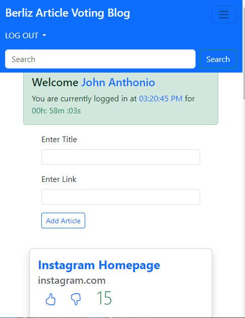

<div class="shadow-lg text-xl font-sans text-light-gray bg-gradient-to-b from-lemon-green via-dark-blue to-dark-blue">
    <div class="p-8 py-48">
        <p class="text-xl md:text-4xl font-sans text-center mb-4 text-dark blue font-bold">
            Crafting Engaging User Experiences: Article Voting Blog
        </p>
        <div class="flex items-center justify-center mt-4">
            <div class="grid grid-cols items-center">
                <div class="flex items-center justify-center md:justify-start mt-8">
                    
                    
                </div>
                <div class="text-sm md:text-md font-sans p-2 text-justify md:p-8">
                    <div class="grid grid-cols-2 font-mono">
                        <div class="p-0 md:p-4">
                            <p class="p-2 mt-4">
                                My internship at Merpersive Casablanca marked the inception of my Angular journey,
                                culminating in
                                the creation of the Article Voting blog. This innovative project redefined user engagement
                                by
                                allowing individuals to interact dynamically with articles, shaping the platform's content
                                based on
                                their preferences.    
                            </p>

                            <p class="p-2 mt-4">
                                Article Voting facilitated seamless user interactions through its dynamic sorting algorithm,
                                ensuring that the most popular articles surfaced prominently. Moreover, users could actively
                                contribute to the platform by adding new articles, fostering a diverse and vibrant content
                                ecosystem.
                            </p>

                            <p class="p-2 mt-4">
                                Through this project, I honed my skills in Angular, TypeScript, and Bootstrap integration,
                                gaining
                                valuable experience in form development, sorting algorithms, and UI optimization. Article
                                Voting not
                                only showcased my technical prowess but also deepened my understanding of user-centric
                                design
                                principles and community-driven platforms.
                            </p>

                            <div class="flex justify-center items-center p-2 md:p-8 mt-16 hidden md:block">
                                <button class="p-2 py-2 border-2 border-lemon-green text-white font-bold font-sans rounded-md 
                                     mr-8 md:mr-64 cursor-pointer whitespace-nowrap"
                                    (click)="openVoting('https://github.com/blessedtasela/article-up-vote')">
                                    Check out the source code here
                                    <i-feather name="github" class="-mt-1 text-lemon-green" style="width: 30px;"> </i-feather>
                                </button>
                            </div>
                        </div>
                        
                    </div>
                    <div class="flex justify-center p-2 md:p-8 mt-4 block md:hidden">
                        <button class="p-2 py-2 border-2 border-lemon-green text-white font-bold font-sans rounded-md 
                             mr-8 md:mr-64 cursor-pointer"
                            (click)="openVoting('https://github.com/blessedtasela/article-up-vote')">
                            Check out the source code here
                            <i-feather name="github" class="-mt-1 text-lemon-green" style="width: 30px;"> </i-feather>
                        </button>
                    </div>
                </div>
            </div>
        </div>
    </div>
</div>